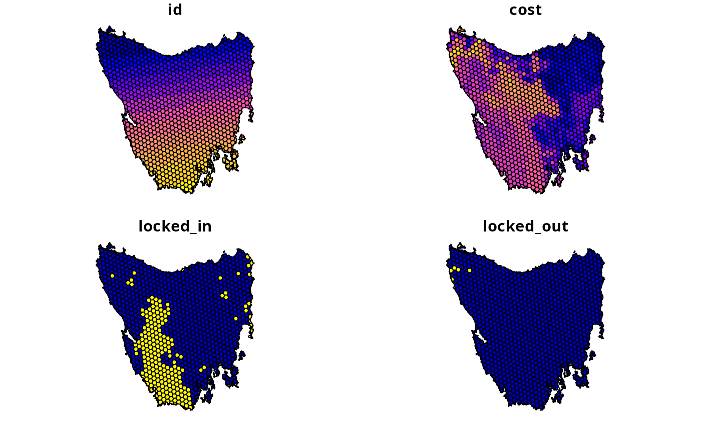

Conservation planning dataset for Tasmania, Australia.
Format
- tas_pu
sf::st_sf()object.- tas_features
terra::rast()object
Details
The following functions are provided to import data:
get_tas_puImport planning unit data. The planing units are a
sf::st_sf()simple features object. Each row corresponds to a different planning unit, and columns contain information about the planning units. It has columns that contain: ("id") unique identifiers and ("cost") unimproved land values for the planning units. It also contains columns ("locked_in"and"locked_out") withlogicalvalues (i.e.TRUEorFALSEvalues) for locking in and locking out planning units. These data obtained from the "Introduction to Marxan" course and were originally generated as part of a larger spatial prioritization Resources (Klein et al. 2007).get_tas_featuresImport biodiversity feature data. The feature data are a multi-layer
terra::rast()object. classes. Each layer corresponds to a different vegetation class and contains binary cell values that indicate the presence or absence of the vegetation class. These data were obtained from the Australian Government's National Vegetation Information System (Australian Government Department of Climate Change, Energy, the Environment and Water 2020).
References
Klein C, Carwardine J, Wilson K, Watts M, and Possingham H (2007) Spatial Prioritization Approaches for the Conservation of Biodiversity in Australia: Considering Conservation Costs, Ecological & Evolutionary Processes, and Large-Intact Areas. Report to the Department of Environment; Water Resources.
Australian Government Department of Climate Change, Energy, the Environment and Water (2020). National Vegetation Information System. Version 6.0. Available at http://environment.gov.au/fed/catalog/search/resource/details.page?uuid=%7B3F8AD12F-8300-45EC-A41A-469519A94039%7D.
Examples
# load packages
library(terra)
library(sf)
# load data
tas_pu <- get_tas_pu()
tas_features <- get_tas_features()
# preview planning units
print(tas_pu)
#> Simple feature collection with 1130 features and 4 fields
#> Geometry type: MULTIPOLYGON
#> Dimension: XY
#> Bounding box: xmin: 298809.6 ymin: 5167775 xmax: 613818.8 ymax: 5502544
#> Projected CRS: WGS 84 / UTM zone 55S
#> # A tibble: 1,130 × 5
#> id cost locked_in locked_out geom
#> <int> <dbl> <lgl> <lgl> <MULTIPOLYGON [m]>
#> 1 1 60.2 FALSE TRUE (((328497 5497704, 326783.8 5500050, 326775…
#> 2 2 19.9 FALSE FALSE (((307121.6 5490487, 305344.4 5492917, 3053…
#> 3 3 59.7 FALSE TRUE (((321726.1 5492382, 320111 5494593, 320127…
#> 4 4 32.4 FALSE FALSE (((304314.5 5494324, 304342.2 5494287, 3043…
#> 5 5 26.2 FALSE FALSE (((314958.5 5487057, 312336 5490646, 312339…
#> 6 6 51.3 FALSE FALSE (((327904.3 5491218, 326594.6 5493012, 3284…
#> 7 7 32.3 FALSE FALSE (((308194.1 5481729, 306601.2 5483908, 3066…
#> 8 8 38.4 FALSE FALSE (((322792.7 5483624, 319965.3 5487497, 3199…
#> 9 9 3.55 FALSE FALSE (((334896.6 5490731, 335610.4 5492490, 3357…
#> 10 10 1.83 FALSE FALSE (((356377.1 5487952, 353903.1 5487635, 3538…
#> # ℹ 1,120 more rows
plot(tas_pu)

# plot features
print(tas_features)
#> class : SpatRaster
#> dimensions : 398, 359, 33 (nrow, ncol, nlyr)
#> resolution : 1000, 1000 (x, y)
#> extent : 288801.7, 647801.7, 5142976, 5540976 (xmin, xmax, ymin, ymax)
#> coord. ref. : WGS 84 / UTM zone 55S (EPSG:32755)
#> source : tas_features.tif
#> names : Banks~lands, Bould~marks, Calli~lands, Cool ~orest, Eucal~hyll), Eucal~torey, ...
#> min values : 0, 0, 0, 0, 0, 0, ...
#> max values : 1, 1, 1, 1, 1, 1, ...
plot(tas_features)